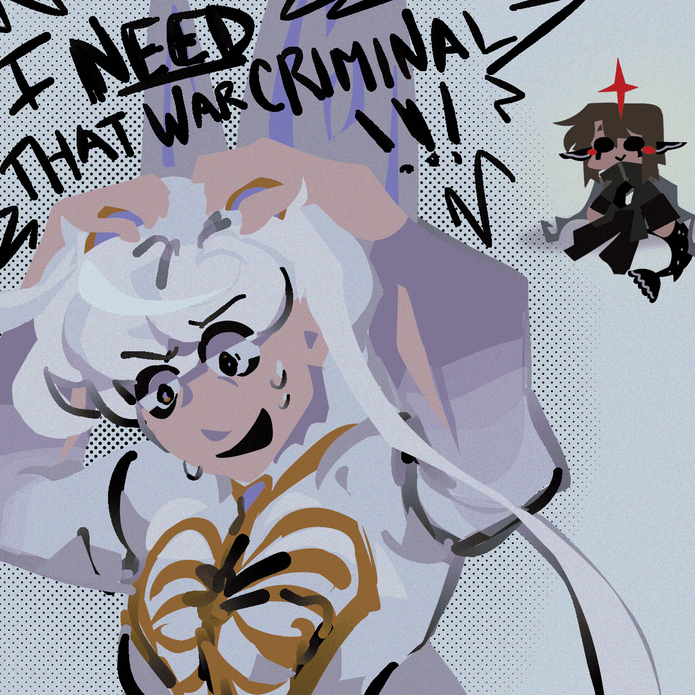

YGCSGC
creation date: apr 26
characters featured: archer
urk this is kinda a freeform sketchbook spread to get my mind off work. it's doodles of archer but you can hardly tell lol
out of all the polished drawings i could have sent, i gave this one to my school's illustration club LMAOOO. it was for a little prompt event idk. i was listening to this song as i drew. weep, for no one can possibly comprehend my sophisticated and curated music taste.
also fyi, that's a sticker i found under a lunch table, i could never join a sorority, eep.
ohyeah, bonus doodle that i didnt know where else to put:
down bad